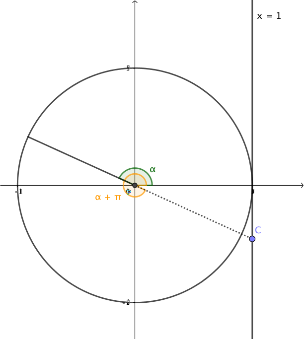
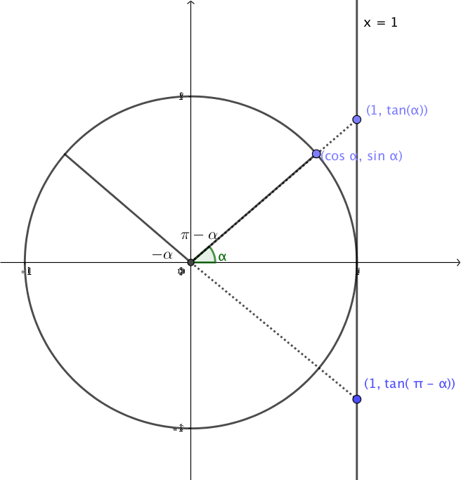
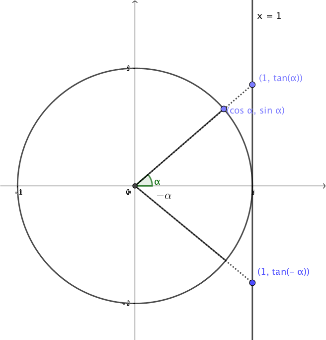

6. Tangens och dess egenskaper
Hittils har vi bekantant oss med sinus och cosinus. Till nästa tar vi och lär oss om tangens. Tangens får vi genom att bilda förhållandet \( \dfrac{\sin x}{\cos x} \).
Lösning
Eftersom nämnaren inte får få värdet noll så är tangens definierad då \( \cos \alpha \not=0 \). Alltså då \( \alpha \not= \dfrac{\pi}{2}+n\cdot \pi, n \in \mathbb{Z} \).
Då vi kommer ihåg att \( \sin \alpha = \dfrac{\text{motstående katet}}{\text{hypotenusa}} \) och \( \cos \alpha = \dfrac{\text{närliggande katet}}{\text{hypotenusa}} \) får vi att \( \tan \alpha = \dfrac{\sin \alpha}{\cos \alpha} = \dfrac{\dfrac{\text{motstående katet}}{\text{hypotenusa}}}{\dfrac{\text{närliggande katet}}{\text{hypotenusa}}} = \dfrac{\text{motstående katet}}{\text{närliggande katet}} \).
I enhetscirkeln är periferipunktens x-koordinat \( \cos \alpha \) och y-koordinat \( \sin \alpha \). Det betyder att \( \tan \alpha \) är förhållandet mellan periferipunktens koordinater.

För att bestämma ett värde för \( \tan \alpha \) ser vi förbi periferipunkten och går till skärningspunkten mellan vinlens linje och linjen \( x=1 \), punkt C. Därifrån avläser vi y-koordinaten, punkt D, för att få ett värde för \( \tan \alpha \).
Vi talar om att punkten C är tangentpunkten för vinkeln \( \alpha \). Koordinaterna för tangetpunkten är \( (1, \tan \alpha) \).
Lösning
Vi har \( \tan \alpha = \dfrac{\sin\alpha}{\cos\alpha} = \dfrac{\dfrac{2}{5}}{\dfrac{4}{7}} = \dfrac{2}{5}\cdot \dfrac{7}{4} = \dfrac{7}{10} \).
Periodicitet och symmetri hos tangens
Eftersom tangens är y-koordinaten för tangentpunkten märker vi att två vinklar ger samma värde, \( \alpha \) och \( \pi +\alpha \). Vi adderar till ett halvt varv, 180o eller \( \pi \) radianer, och får samma tangetpunkt. Detta kan vi göra med perioden \( \pi \). Perioden hos tangens är alltså \( \pi \).

Alltså gäller \( \tan \alpha = \tan (\alpha + n\cdot \alpha) \) där \( n \in \mathbf{Z} \).
Vidare märker vi att

Vinklarna \( \alpha \) och \( \pi-\alpha \) ger varandras motsatta tal.
Alltså \( \tan \alpha = -\tan(\pi -\alpha) \).
Då vi jämför tangens för vinklarna \( \alpha \) och \( -\alpha \) märker vi att de ger varandras motsatta tal.

Alltså \( \tan \alpha = -\tan(-\alpha) \).
Tangens definieras som, \( \tan x = \dfrac{\sin x}{\cos x} \).
Definitionsmängden för tangens är alla reella tal förutom \( \alpha \not= \dfrac{\pi}{2}+n\cdot \pi, n \in \mathbb{Z} \).
Perioden för tangens är \( \pi \).
För tangens gäller att \( \tan \alpha = \tan (\alpha + n\cdot \alpha) = -\tan(\pi -\alpha) = -\tan(-\alpha) \).
Uppgifter
- Låt \( \sin\alpha = \dfrac{2}{3} \) och \( \cos\alpha=\dfrac{5}{6} \). Bestäm \( \tan\alpha \).
\( \tan \alpha = \dfrac{\sin\alpha}{\cos\alpha} = \dfrac{\dfrac{2}{3}}{\dfrac{5}{6}} = \dfrac{2}{3} \cdot \dfrac{6}{5} = \dfrac{4}{5} \).
- Låt \( \sin\alpha = \dfrac{1}{2} \) och \( \cos\alpha=\dfrac{3}{4} \). Bestäm \( \tan\alpha \).
\( \tan \alpha = \dfrac{\sin\alpha}{\cos\alpha} = \dfrac{\dfrac{1}{2}}{\dfrac{3}{4}} = \dfrac{1}{2} \cdot \dfrac{4}{3} = \dfrac{2}{3} \).
- Vi talar om att de trigonometriska funktionerna har teckenschema. Det betyder om de är positiva eller negativa i en viss kvadrant, område i koordinatsystemet. Rita ett koordniatsystem i ditt häfte och bestäm teckenschemat för tangens genom att studera teckenschemat för sinus och cosinus. Skriv plus eller minus i rätt kvadrant.
Vi får \( \begin{array}{c|c}-&+ \\ \hline + & - \\ \end{array} \)
- Bestäm på Geogebra appletten tangensvärdet för följande vinklar genom att flytta på punkten A. Vissa vinklar får du inte helt exakt men jobba med det som är närmast. Svara med två decimalers noggrannhet.
- \( \tan 30^{\circ} \)
- \( \tan 45^{\circ} \)
- \( \tan 220^{\circ} \)
- \( \tan 140^{\circ} \)
Hur får du följande vinklar? Utnyttja symmetrin i tangens.
- \( \tan 30^{\circ}=0,58 \)
- \( \tan 45^{\circ}=1,00 \)
- \( \tan 220^{\circ}=0,85 \)
- \( \tan 140^{\circ}=-0,84 \)
- Bestäm värdet av tangens genom att du vet periferipunktens koordinater.
- Vinkeln 0o har periferipunkten \( (1,0) \). \( \tan0^{\circ} \) har då värdet
\( \tan \alpha = \dfrac{\sin \alpha}{\cos \alpha} = \dfrac{0}{1} = 0 \).
- Vinkeln \( \dfrac{3\pi}{4} \) har periferipunkten \( (-\dfrac{1}{\sqrt{2}},\dfrac{1}{\sqrt{2}}) \). \( \tan \dfrac{3\pi}{4} \) har då värdet
\( \tan \alpha = \dfrac{\sin \alpha}{\cos \alpha} = \dfrac{\frac{1}{\sqrt{2}}}{-\frac{1}{\sqrt{2}}} = -1 \)
- Vinkeln \( \dfrac{\pi}{3} \) har periferipunkten \( (\dfrac{1}{2},\dfrac{\sqrt{3}}{2}) \). \( \tan \dfrac{\pi}{3} \) har då värdet
\( \tan \alpha = \dfrac{\sin \alpha}{\cos \alpha} = \dfrac{\sqrt{3}}{2} / \dfrac{1}{2} = \dfrac{\sqrt{3}}{2} \cdot \dfrac{2}{1} =\sqrt{3} \).
- Vinkeln 90o har periferipunkten \( (0,1) \). \( \tan90^{\circ} \) har då värdet
\( \tan \alpha = \dfrac{\sin \alpha}{\cos \alpha} = \dfrac{1}{0} \) är ej definierad.
- Vinkeln 0o har periferipunkten \( (1,0) \). \( \tan0^{\circ} \) har då värdet
- Bestäm exakta värden på \( \cos\alpha \) och \( \tan \alpha \) då \( \sin\alpha=-\dfrac{3}{5} \) och \( \pi < \alpha < \dfrac{3\pi}{2} \).
Eftersom \( \sin\alpha = \dfrac{3}{5} \) så är hypotenusans längd 5 och ena kateten har längden 3. Den andra katetens längd är \( \sqrt{5^2-3^2} = \sqrt{25-9} = \sqrt{16}=4 \).
Eftersom \( \pi < \alpha < \dfrac{3\pi}{2} \) så är \( \cos \alpha <0 \) och \( \tan \alpha >0 \).
Vi får att \( \cos \alpha = -\dfrac{4}{5} \) och \( \tan \alpha = \dfrac{3}{4} \).
- Vinkeln \( \alpha \) uppfyller villkoret \( 6\sin\alpha + 4\cos\alpha =0 \). Bestäm exakta värden för \( \sin\alpha \) och \( \cos\alpha \).
\( 6\sin\alpha + 4\cos\alpha =0 \) ger oss att \( \tan \alpha = \dfrac{\sin\alpha}{\cos \alpha}=-\dfrac{4}{6}=-\dfrac{2}{3} \). Kateternas längder är alltså 2 och 3. Hypotenusans längd är \( \sqrt{2^2+3^2}=\sqrt{13} \).
Alltså \( \sin\alpha = \pm\dfrac{2}{\sqrt{13}} \) och \( \cos\alpha = \pm\dfrac{3}{\sqrt{13}} \).
Eftersom \( \tan \alpha \) skall vara negativ måste vi alternera tecknena.
Vinklarna är \( \sin\alpha = \dfrac{2}{\sqrt{13}} \) och \( \cos\alpha = -\dfrac{3}{\sqrt{13}} \) eller \( -\sin\alpha = \dfrac{2}{\sqrt{13}} \) och \( \cos\alpha = \dfrac{3}{\sqrt{13}} \).
- När vi bildade tangens utförde vi divisionen \( \dfrac{\sin x}{\cos x} \). Om vi utför divisionen \( \dfrac{\cos x}{\sin x} \) får vi tangens inversa funktion, cotangens, \( \cot x \). Bestäm definitionsmängden för \( \cot x \).
Eftersom \( \cot x = \dfrac{\cos x}{\sin x} \) är cotangens definierad i alla reella tal förutom då \( \sin x =0 \). Alltså då \( x= 0 +n\cdot \pi \) där \( n \in \mathbf{Z} \).